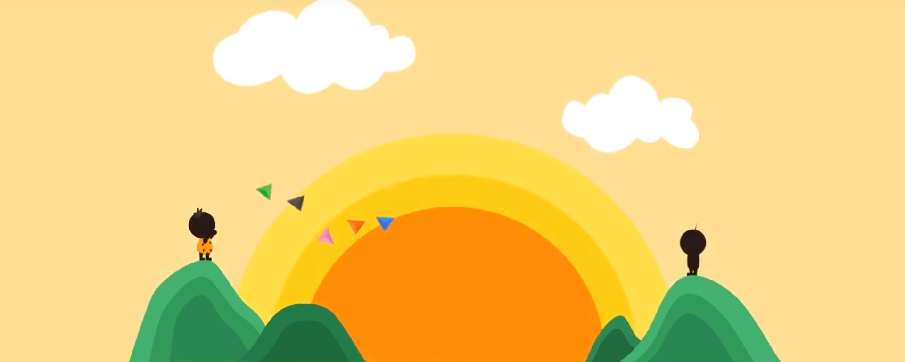

PORTFOLIO
ABOUT

THE HISTORY OF MESSAGING
Overview
Evolution of Sending Message
Role
I worked with three team members. I was responsible for theme development and participation in animation design and production.
Tool
After Effect, Illustrator